π的近似值
如果仔细测量，我们也可以通过实验的方式得出π的值比3大一点儿的结论。但是，我们难免会想到两个问题：如果没有实际测量数据，我们可以证明π的值与3比较接近吗？是否可以用某个分数或者简单的公式来表示π的值呢？
第一个问题的答案是肯定的。画一个半径为1的圆，我们知道这个圆的面积是π×12 = π。在下图中，我们画了一个边长为2的正方形，并把圆完全包围起来。圆的面积肯定小于正方形的面积，由此可证π< 4。
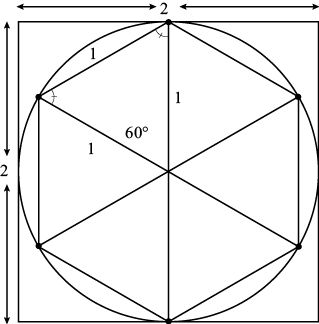
3 < π < 4的几何证明
与此同时，这个圆还包含一个六边形，且六边形的顶点均匀地分布在圆周上。这个内接六边形的周长是多少呢？我们可以将该六边形分割成6个三角形，分别包含一个圆心角360°/6 = 60°，且有两条边是圆的半径（长度为1），因此这些三角形都是等腰三角形。根据等腰三角形定理，另外两个角相等，也都是60°。因此，这些三角形都是等边三角形，且边长为1。六边形的周长是6，小于圆的周长2π。也就是说，6 < 2π，即π > 3。综合前面的几何证明，就有：
3 < π < 4
延伸阅读
我们可以增加多边形的边数，从而把π的值限定在更小的范围之内。例如，如果把包围圆的正方形改成六边形，就可以得出 π < 2 = 3.46…
= 3.46…
同样，这个六边形可以分割成6个等边三角形，每个等边三角形又可以分割成两个全等的直角三角形。如果这些直角三角形较短的直角边长为x，那么它的斜边长就是2x。根据勾股定理，x2 + 1 = (2x)2。解方程式就可以求出x的值：x = 1/。也就是说，六边形的周长是12 / = 4。由于六边形的周长大于圆的周长2π，因此π < 2。（有趣的是，如果比较圆与六边形的面积，也会得出相同的结果。）
伟大的古希腊数学家阿基米德（公元前287~公元前212）利用这个结果，把内接和外切多边形的边数增加至12、24、48和96，最终证明3.141 03 < π < 3.142 71。这个不等式也可以写成下面这种更加清楚明了的形式：
3
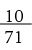
< π < 3
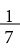
很多分数都可以用来近似表示π的值。例如：
我最欣赏的是最后一个分数，它不仅正确地给出了π的小数点后的6位小数，而且整个分数重复使用了前三个奇数（1、3、5各出现两次），这三个奇数还是按先后次序排列的！
利用分数准确地表示π的值，自然是一个令人感兴趣的课题（当然，这个分数的分子和分母都必须是整数，否则这个问题就太简单了，比如π =
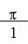
）。1768年，约翰·海因里希·朗伯（Johann Heinrich Lambert）证明这个任务是无法完成的，因为他发现π是一个无理数。那么，它是否可以写成某个数的平方根或者立方根的形式呢？例如，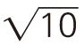
= 3.162…就与π的值非常接近。但是，1882年，费迪南德·冯·林得曼（Ferdinand von Lindemann）证明π不仅是一个无理数，还是一个“超越数”（transcendental number），也就是说，它不是任何整数系数多项式的根。例如， 是无理数，但它不是超越数，因为它是多项式x2 – 2的一个根。
是无理数，但它不是超越数，因为它是多项式x2 – 2的一个根。
尽管π不能表示成分数的形式，但它可以表示成分数的和或者乘积，前提是需要使用无穷多个分数！例如，我将在本书第12章告诉大家：
π = 4 (1 –
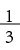
+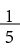
– +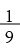
–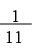
+ …)
上述公式非常美观，但在计算π的值时却没有多大的实际价值，因为即使在300项之后，计算结果与π的接近程度还不如22/7。下面，我再向大家介绍一个令人吃惊的公式——“沃利斯公式”（Wallis’s formula）。这个公式将π表示为无穷乘积的形式，尽管它也是在很多项之后才趋近于π的值。
π = 4 (
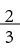
×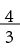
×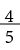
×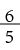
×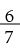
×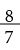
×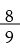
…)
=4 ( 1 – ) ( 1 –
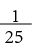
) ( 1 –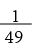
) ( 1 –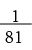
)…